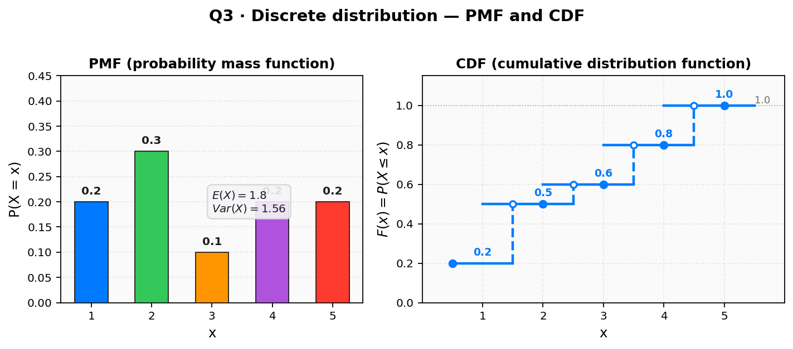

The discrete random variable $X$ has the distribution:
| $x$ | 1 | 2 | 3 | 4 | 5 |
|---|---|---|---|---|---|
| $\mathrm{P}(X=x)$ | 0.2 | 0.3 | 0.1 | 0.2 | 0.2 |
(B) Specify the cumulative distribution function of $X$. (D) Find $\mathrm{Var}(5 - 3X)$, given $\mathrm{E}(X) = 1.8$.
[Total: 8 marks]

Strategy. $F(x) = \mathrm{P}(X \le x) = \sum_{x_i \le x} p_i$. Add the probabilities cumulatively from left to right.
Cumulative probabilities
$$F(1) = 0.2, \quad F(2) = 0.2+0.3 = 0.5,$$ $$F(3) = 0.5+0.1 = 0.6, \quad F(4) = 0.6+0.2 = 0.8,$$ $$F(5) = 0.8+0.2 = 1.0.$$Sense check. The last entry must be $F(5) = 1.0$ (the total probability). If it is not 1, an earlier entry is wrong.
Strategy. Write the CDF as a two-row table with $x$ on top and $F(x)$ underneath. This is the form the mark scheme rewards.
CDF table
| $x$ | 1 | 2 | 3 | 4 | 5 |
|---|---|---|---|---|---|
| $F(x)$ | 0.2 | 0.5 | 0.6 | 0.8 | 1.0 |
Sense check. Two rows ($x$ and $F(x)$), five columns, last entry 1.0 — this is the form the mark scheme rewards.
Strategy. Compute $\mathrm{E}(X^2) = \sum x_i^2 \, p_i$. There is no $1/n$ factor — the $p_i$ already encode the relative weight.
Substitute
$$\mathrm{E}(X^2) = 1^2(0.2) + 2^2(0.3) + 3^2(0.1) + 4^2(0.2) + 5^2(0.2)$$ $$= 0.2 + 1.2 + 0.9 + 3.2 + 5.0 = 4.6.$$Sense check. Each term $x_i^2 p_i$ is at most $25 \times 0.2 = 5$; the total $4.6$ is in the right ballpark and is less than $5^2 = 25$ (the max $x^2$), as expected.
Strategy. The variance formula (the one Phuc keeps forgetting): $\mathrm{Var}(X) = \mathrm{E}(X^2) - [\mathrm{E}(X)]^2$. No division by $n$ anywhere.
Apply
$$\mathrm{Var}(X) = 4.6 - (1.8)^2 = 4.6 - 3.24 = 1.36.$$Sense check. $\mathrm{Var}(X) \ge 0$ always (1.36 > 0 ✓); the variance has units of $X^2$ (squared units).
Strategy. For a linear transformation $aX + b$: $\mathrm{Var}(aX + b) = a^2 \cdot \mathrm{Var}(X)$. The shift $b$ does not enter; the sign of $a$ does not matter (squared). Here $a = -3$, $b = 5$.
Apply
$$\mathrm{Var}(5 - 3X) = (-3)^2 \cdot \mathrm{Var}(X) = 9 \times 1.36.$$Sense check. $\mathrm{Var}(5-3X) = 9 \times 1.36 > 1.36$ — scaling by $|-3| = 3$ inflates the spread by $3^2 = 9$, as expected.
Strategy. Multiply out and round to at least 3 significant figures.
Compute
$$\mathrm{Var}(5 - 3X) = 9 \times 1.36 = 12.24 \approx 12.2 \;\text{(3 s.f.)}.$$Sense check. The answer is positive (variance is always $\ge 0$), larger than $\mathrm{Var}(X)$ by a factor of 9, and given to 3 s.f. — all consistent.